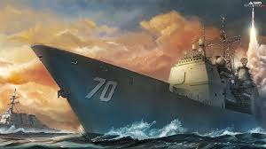
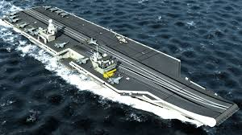

Indian Air Carrier-INS Vikrant

T3 was a sea-going torpedo boat operated by the Royal Yugoslav Navy between 1921 and 1941. Originally 78 T, a 250t-class torpedo boat commissioned on 23 August 1914 by the Austro-Hungarian Navy
He saw active service during World War I, performing convoy, escort and minesweeping tasks, anti-submarine operations and shore bombardment missions. Following Austria-Hungary's defeat in 1918, she was allocated to Yugoslavia and renamed T3. She was captured by the Italians during the Axis invasion of Yugoslavia in April 1941. After her main armament was modernised, she served with the Royal Italian Navy as T3, although she was only used for coastal and second-line tasks. Following the Italian capitulation in September 1943, she was captured by Germany, and after being fitted with additional anti-aircraft guns, she served with the German Navy and the Navy of the Independent State of Croatia as TA48. In German and Croatian service her crew of 52 consisted entirely of Croatian officers and enlisted men. She was sunk by Allied aircraft in February 1945 while in the port of Trieste, where she had been built
Indian Submarine-INS NIPAT

INS Nipat (K86) was a Vidyut class missile boat of the Indian Navy.[2][3] It was part of the 25th "Killer" Missile squadron.
During the Indo-Pakistani War of 1971, INS Nipat was part of the Operation Trident strike force. On the afternoon of December 4, the strike group made its way towards Karachi. Late that evening, around 70 miles south of Karachi, the Nipat detected a large target about 42 miles to the northeast, later identified as the merchant vessel, MV Venus Challenger, chartered by the Pakistan Navy to carry US ammunition to East Pakistan. It had Pakistani naval officers and sailors on board. The Nipat launched 2 missiles on MV Venus Challenger, sinking it.[4]
During the Indo-Pakistani War of 1971, INS Nipat was part of the Operation Trident strike force. On the afternoon of December 4, the strike group made its way towards Karachi. Late that evening, around 70 miles south of Karachi, the Nipat detected a large target about 42 miles to the northeast, later identified as the merchant vessel, MV Venus Challenger, chartered by the Pakistan Navy to carry US ammunition to East Pakistan. It had Pakistani naval officers and sailors on board. The Nipat launched 2 missiles on MV Venus Challenger, sinking it.[4]
Other vessels of the strike group sank a Pakistan Navy destroyer PNS Khaibar and a minesweeper PNS Muhafiz.
Lieutenant Commander Bahadur Nariman Kavina, the Commanding Officer of the Nipat was awarded the Vir Chakra for his role